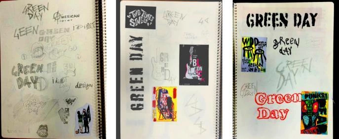
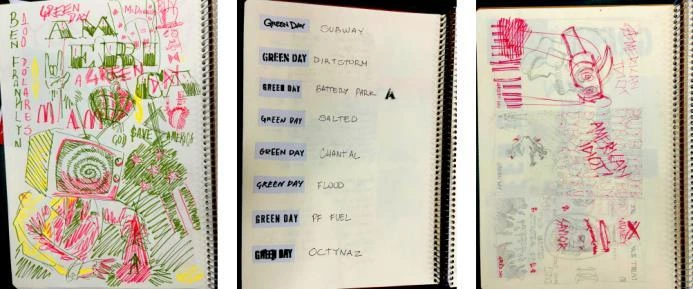

American Idiot
This project began with the proposal to create a new cover for Green Day’s American Idiot, visually reinterpreting the critiques in the album. The starting point was to question the American Dream and the way American society and culture are portrayed.
The aesthetic translates the album’s intense, provocative energy into a bold composition, exploring visual elements associated with rebellion, dissatisfaction and social alienation. Typography and textures reinforce this atmosphere, creating a visual identity that echoes the songs’ defiant character.
The project turns these critiques into a visual experience, using contrast and graphic intensity to represent the conflict between the American ideal and the reality presented in the album.
The new cover therefore extends the concepts in American Idiot, visually conveying the same sense of restlessness, criticism and rebellion that drives the album.


